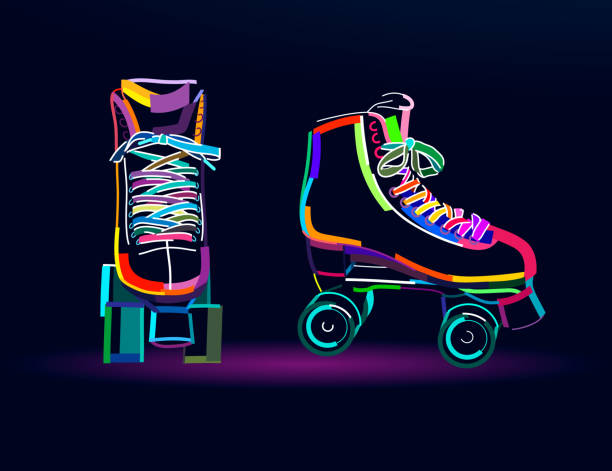

Afiya Khalid
A creative Ninjaneer
Greetings
I am currently a student and I love travelling because a change of latitude would help my attitude .
My Skills

Creativity and Design
I am a junior developer and I recently started coding using HTML and CSS.I am also very good at designing since I have an artistic background.If you are someone who is looking for a good designer then I am here to make imaginative and artistics websites.The quote goes like this "A design creates culture,Culture shapes values,Values determine future".
Skating
I'm a skilled roller skater and I am still learning to skateboard.I find great interest in outdoor activities, at times"I may loose my balance,but I will never loose my determination".